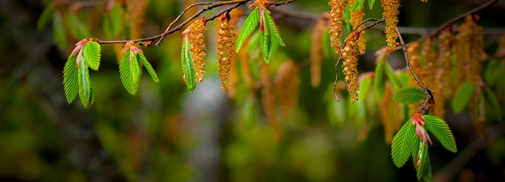

Геннадий Трофимов
"Серёжка ольховая"
Уронит ли ветер
в ладони сережку ольховую,
начнет ли кукушка
сквозь крик поездов куковать,
задумаюсь вновь,
и, как нанятый, жизнь истолковываю
и вновь прихожу
к невозможности истолковать.
Себя низвести
до пылиночки в звездной туманности,
конечно, старо,
но поддельных величий умней,
и нет униженья
в осознанной собственной малости -
величие жизни
печально осознанно в ней.
Сережка ольховая,
легкая, будто пуховая,
но сдунешь ее -
все окажется в мире не так,
а, видимо, жизнь
не такая уж вещь пустяковая,
когда в ней ничто
не похоже на просто пустяк.
Сережка ольховая
выше любого пророчества.
Тот станет другим,
кто тихонько ее разломил.
Пусть нам не дано
изменить все немедля, как хочется,-
когда изменяемся мы,
изменяется мир.
И мы переходим
в какое-то новое качество
и вдаль отплываем
к неведомой новой земле,
и не замечаем,
что начали странно покачиваться
на новой воде
и совсем на другом корабле.
Когда возникает
беззвездное чувство отчаленности
от тех берегов,
где рассветы с надеждой встречал,
мой милый товарищ,
ей-богу, не надо отчаиваться -
поверь в неизвестный,
пугающе черный причал.
Не страшно вблизи
то, что часто пугает нас издали.
Там тоже глаза, голоса,
огоньки сигарет.
Немножко обвыкнешь,
и скрип этой призрачной пристани
расскажет тебе,
что единственной пристани нет.
Яснеет душа,
переменами неозлобимая.
Друзей, не понявших
и даже предавших,- прости.
Прости и пойми,
если даже разлюбит любимая,
сережкой ольховой
с ладони ее отпусти.
И пристани новой не верь,
если станет прилипчивой.
Призванье твое -
беспричальная дальняя даль.
С шурупов сорвись,
если станешь привычно привинченный,
и снова отчаль
и плыви по другую печаль.
Пускай говорят:
«Ну когда он и впрямь образумится!»
А ты не волнуйся -
всех сразу нельзя ублажить.
Презренный резон:
«Все уляжется, все образуется...»
Когда образуется все -
то и незачем жить.
И необъяснимое -
это совсем не бессмыслица.
Все переоценки
нимало смущать не должны,-
ведь жизни цена
не понизится
и не повысится -
она неизменна тому,
чему нету цены.
С чего это я?
Да с того, что одна бестолковая
кукушка-болтушка
мне долгую жизнь ворожит.
С чего это я?
Да с того, что сережка ольховая
лежит на ладони и,
словно живая,
дрожит...
Евгений Евтушенко."Мое самое-самое".